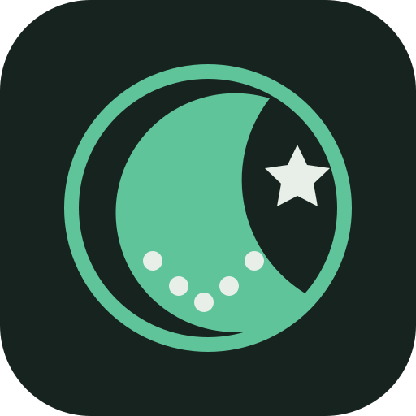

MORGENROUTINE
Deine Morgen-Athkar
مسجد بلال · Siegen
Auf Mawaqit öffnen ↗
0%
0 / 23
--
Aktuelle Erinnerung
0 von 1
تقبّل الله منك
الحمد لله، أتممت أذكار الصباح
23 / 23Abgeschlossen
0h 0mSitzungsdauer
In Ruhe lesen und anschließend zählen